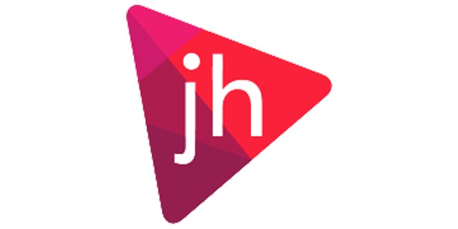

"Crowdsourcing and the Democratisation of Innovation" with Rob Wilmot
This month's talk and speaker: "Crowdsourcing and the Democratisation of Innovation" with Rob Wilmot
Buried deep within organisations and communities there are potentially tranformational ideas that never see the light of day.
This week at Nott Tuesday Rob Wilmot will be discussing how crowd sourcing opens up opportunities for communities both to engage with and innovate in society today.
Event Sponsors
Our sponsors help us get great speakers in and provide drinks at our monthly events.
- Eversheds operates at the leading edge of business. They regularly advise on cases on behalf of the world's most powerful corporations and financial institutions.
-
 Paypal makes it easy for businesses to get paid. Whether you’re online or offline, in your shop or on the road, one simple PayPal account is all you need.
Paypal makes it easy for businesses to get paid. Whether you’re online or offline, in your shop or on the road, one simple PayPal account is all you need.
-  JH is a web agency working with exciting clients on challenging projects. They specialise in producing attractive, effective ecommerce websites.
How to find us?
Don't get lost coming to our events